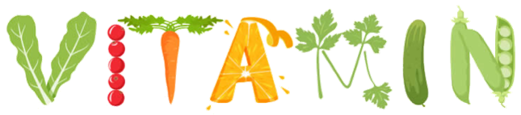
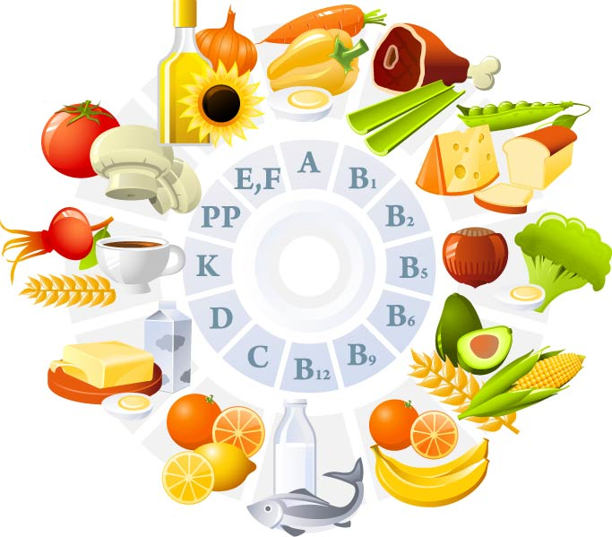
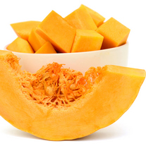
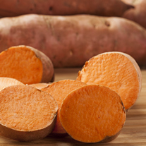
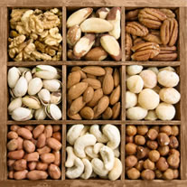
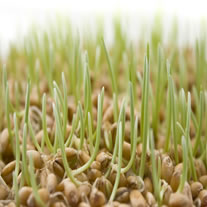
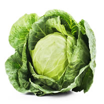
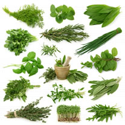
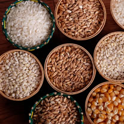

Vitaminok
- Napi ajánlott vitaminbevétel
- kutatások
- A-vitamin
- E-vitamin
- K-vitamin
A vitaminok a szervezet működésében részt vevő molekulák, melyek
többsége a szervezetben nem keletkezik, ezért az embernek állati és
növényi forrásból kell hozzájutnia. Zsírban oldódó és vízben oldódó
vitaminokra különítjük el őket. A zsírban oldódó vitaminok zsírban
oldódnak, a szervezetben képesek raktározódni, hiányuk csak fokozatosan
alakul ki. A vízben oldódó vitaminokra jellemző, hogy csak nagyon kis
mértékben képesek raktározódni, hiányuk gyorsan alakul ki. Ma 13
vitamint ismerünk: Az A-, D-, E-, K-vitaminok zsiradékban, a B1-, B2-,
B6-, B12-, C-vitamin, niacin, pantoténsav, folát és biotin vízben
oldódóak. A vízben oldódó vitaminokat is képes a szervezet ideig-óráig
raktározni (pár hétig, esetleg hónapig) így nem szükséges a mindennapi
fogyasztásuk. A vitaminok hőre érzékenyek, tartós és magas hőmérsékleten
elbomlanak, ezért kell kerülni a túl sok ideig tartó, magas hőmérsékletű
főzést, sütést.
ajánlott vitaminbeviteli értékek felnőttek számára
| Zsírban oldódó vitaminok |
|---|
| A-vitamin | 0,45 mg |
|---|
| D-vitamin | 10 g/nap gyerekeknek,
5 µg/nap felnőtteknek |
|---|
| E-vitamin | 12 mg/nap |
|---|
| K-vitamin | 70-140 µg/nap |
|---|
| Vízben oldódó vitaminok |
|---|
| B1-vitamin | 1,3-1,5 mg/nap |
|---|
| B2-vitamin | 1,5-1,8 mg/nap |
|---|
| B6-vitamin | 1,8-2,2 mg/nap |
|---|
| folát | 200 µg/nap |
|---|
| B12-vitamin | 2 µg/nap |
|---|
| niacin | 15-18 mg/nap |
|---|
| pantoténsav | 8 mg/nap |
|---|
| biotin | 50-100 µg/nap |
|---|
| aszkorbinsav | 60 mg/nap |
|---|

Kutatások
Az 1910-es években jutott el a tudomány odáig, hogy az évszázados
tapasztalatokat összegezze. A tápláléknak az energiát szolgáltató
tápanyagokon, az ásványi sókon és a vízen kívül egyéb járulékos anyagokat
is kell tartalmaznia. Ezeket az anyagokat Kazimierz Funk lengyel
biokémikus nevezte el vitaminoknak 1912-ben.
Kísérleti úton megállapították, hogy a patkányok zavartalan fejlődéséhez
legalább két ilyen anyagra van szükség. Az egyik zsírban vagy
zsíroldószerekben, a másik pedig vízben oldódik. Ekkor nevezték el az
elsőt A-, a másodikat B-vitaminnak.
A vízben oldódó vitaminról kiderült, hogy a skorbutra hatástalan – tehát
kell lennie egy harmadik vízben oldódó anyagnak is. Ezt nevezték el
C-vitaminnak. Majd az A-vitaminról állapították meg, hogy két vitamin
keveréke. A csukamájolaj több órán át 100 °C-on tartva elveszti
szaruhártyafekély (xeroftalmia) gyógyító hatását, de az angolkórra még
így is hatásos, ezért ezt D-vitaminnak nevezték el. Később a harmadik
zsírban oldódó anyagot E-vitaminnak nevezték, majd a K-vitamin
következett. Ezzel majdnem egy időben felfedezték, hogy a B-vitamin sem
egységes, így jutottak a B1-vitamin, majd később a hevítési kísérletek
után a B2-, B6-, és B12-vitaminok felfedezéséhez. Találtak még más
alkotórészeket is, amelyek kémiai szerkezetét már ismerték, ezeket kémiai
nevekkel látták el (például: biotin, nikotinsav, pantoténsav), de
emellett B-komplexen belüli számmal is (sőt, egyeseket több jelöléssel
is, például biotin, =B7-vitamin, =H-vitamin). Később természetesen a
többi vitamin szerkezetét is meghatározták.
A-vitamin
| A-vitaminforrások |
|
 |
 |
| sárgarépa | sütőtök | édesburgonya |
Számos vegyület gyűjtőneve. Az emberi szervezetben szükséges a
növekedéshez, csontfejlődéshez, a fertőzésekkel szembeni védekezéshez, a
bőr és nyálkahártya épségéhez. A szervezet képes az A-vitamint
szintetizálni a narancsvörös növényekben (pl.: sárgarépa, sütőtök)
fellelhető karotinoidokból. Kész formában juthatunk az A-vitaminhoz máj
és belsőségek fogyasztásával, megtalálható a tejben, tejtermékekben,
tojásban és halban. Hiányában a gyermek növekedése visszamarad, a bőr és
nyálkahártyák kiszáradnak, csökken a fertőzésekkel szembeni
védekezőképesség, és károsodik a szem szürkülethez való alkalmazkodása,
és az ún. szürkületi vakság alakul ki. A túlzottan nagy A-vitamin bevitel
toxikus hatású, a szervezetben felhalmozódva májkárosító. A karotin
túlzott fogyasztása nem káros, azonban átmenetileg a bőrt sárgás
árnyalatúra színezheti.
E-vitamin
| E-vitaminforrások |
|  |
 |
|
| olajos magvak | búzacsíra | növényi olajok |
Nyolc hasonló hatású vegyület gyűjtőneve. Sokféle táplálék tartalmazza
úgymint, növényi olajok, olajos magvak, diófélék, búzacsíra, húsok,
halak, tojás. Az E-vitamin a szervezetben elősegíti a
vörösvértest-képzést, növeli a zsírsavak stabilitását, részt vesz a
fehérjeszintézisben. Tulajdonképpen antioxidáns, hatásait ennek révén
fejti ki a szervezetben azáltal, hogy inaktiválja a reaktív
oxigénszármazékokat, melyeknek ismert membrán-, fehérje-, DNS-károsító
hatásuk. Egészséges, változatos táplálkozású emberben nem alakul ki
E-vitamin-hiány, de kis súlyú koraszülöttek vagy súlyos felszívódási
zavarral járó betegségben szenvedő felnőttek esetén kialakulhat.
Túladagolása csak E-vitamin tartalmú táplálékkiegészítők mértéktelen
fogyasztása esetén alakulhat ki.
K-vitamin
| K-vitaminforrások |
|  |
 |
 |
| káposztafélék | zöldségek | gabonamagvak |
Két vegyületet jelent. Az egyik a táplálékkal kerül a szervezetbe, a
másikat a bélbaktériumok szintetizálják. Az ember K-vitamin
szükségletének felét biztosítják a bélben élő baktériumok, a másik felét
kell a táplálékkal a szervezetbe bejuttatni.
K-vitaminban gazdag élelmiszerek a zöldségfélék, zöldfőzelékek, búza és
zabkorpa, gabonamagvak, burgonya, káposztafélék, halak, belsőségek. A
K-vitaminra, négy alvadási faktor szintéziséhez van szükség. Hiányában
vérzések alakulnak ki. K-vitamin-hiány kialakulása felszívódási zavarral
járó betegségek esetén fordulhat elő, továbbá hosszas antibiotikus
kezelés esetén, amikor az antibiotikum kiirtja a bélflórát és ezáltal
megszűnik a bélbaktériumok K-vitamin-szintézise. Újszülötteknél az első
pár hónapban K-vitamin-pótlást alkalmazunk, mivel az anyatejben nincs
elég K-vitamin, a bélflóra éretlen, a méhlepényen pedig elégtelen
mennyiség jut át a terhesség alatt.
Tudjon meg még többet a vitaminokról:BÉRES - Vitamin ABC
Vissza a lap tetejére